Day 29｜Santiago、800公里後、抵達不是為了停下
2026 年 6 月 18 日 · O Pedrouzo → Santiago de Compostela · 20km
朝聖之路第 29 天！距離 Santiago 大教堂，只剩最後的 20 公里。
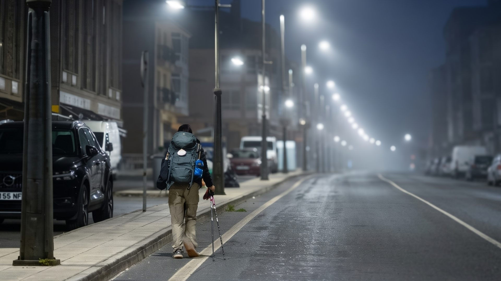
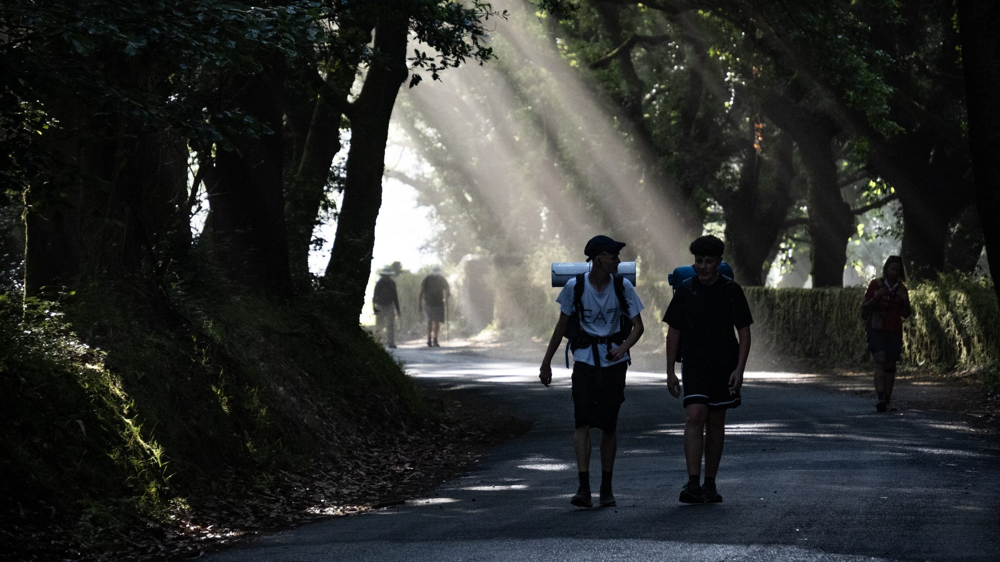
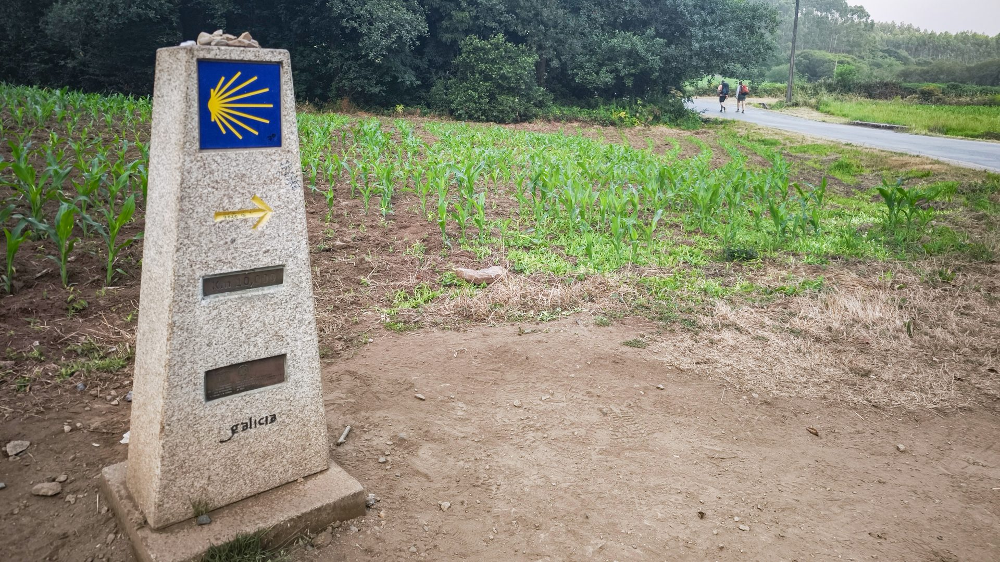
走到最後這幾天才真的意識到：這趟朝聖之路真的快走完了。如果照官方指南，每天走 20 到 25 公里，走完 800 公里的法國之路大約需要 35 天。但我們從來沒打算追求這個「標準答案」——偏愛自由捐贈的庇護所，完全照自己的節奏：有幾天狂走 40 公里，有些日子任性只走 15 公里，讓身體喘口氣。
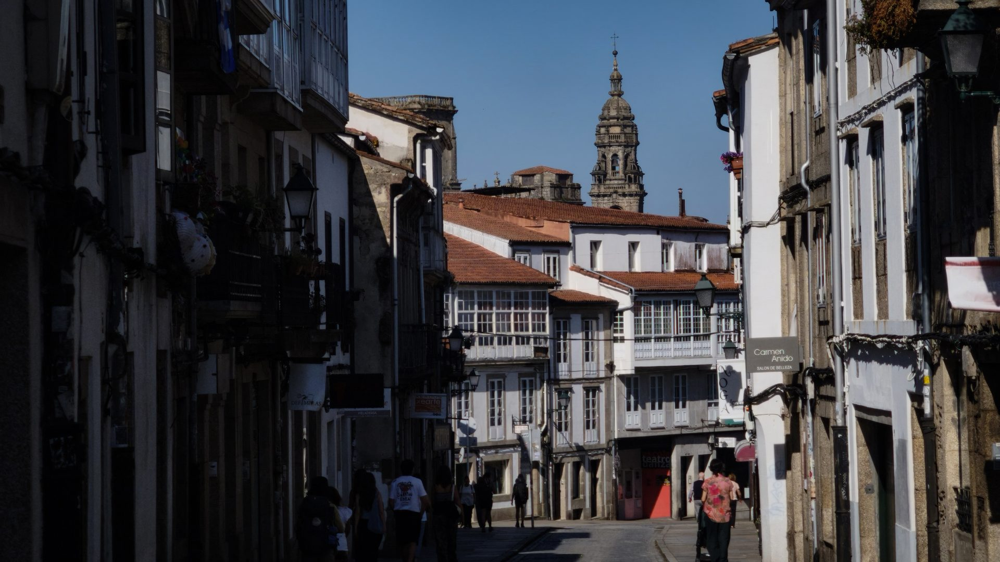
只剩最後一段路了。奇怪的是：明明走了二十幾天，從天天盼著石碑倒數「到底什麼時候才會到」，到真的走到這裡，心情卻變得好複雜——滿滿的期待，又湧上一股捨不得。原來這一個月，已經習慣了每天只要單純思考「往前走」這件事。
倒數兩公里！驚喜發現一家漫畫塗鴉店，自由捐贈就能蓋上超美的教堂蠟章——朝聖護照隱藏版，千萬別錯過！
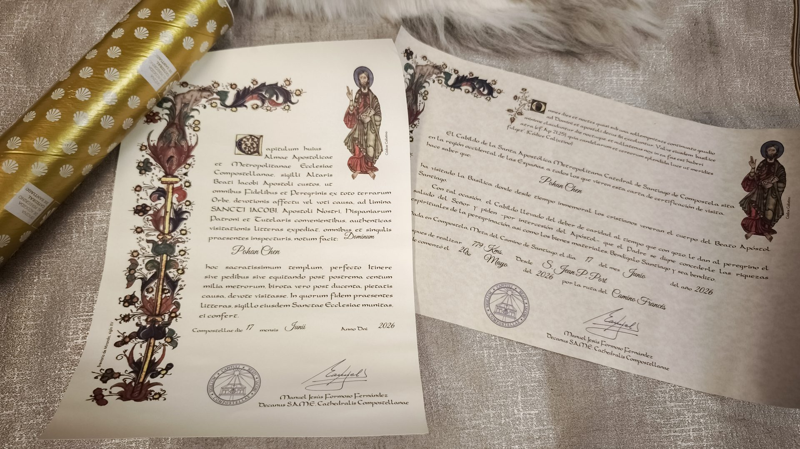
當悠揚的風笛聲從拱門那頭傳來，當聖地牙哥大教堂真正映入眼簾的這一秒，一切突然變得好不真實。站在這裡，喧鬧好像瞬間消失，心裡只有一個很輕、卻很踏實的聲音：「29 天，800 多公里，我真的走到了。」
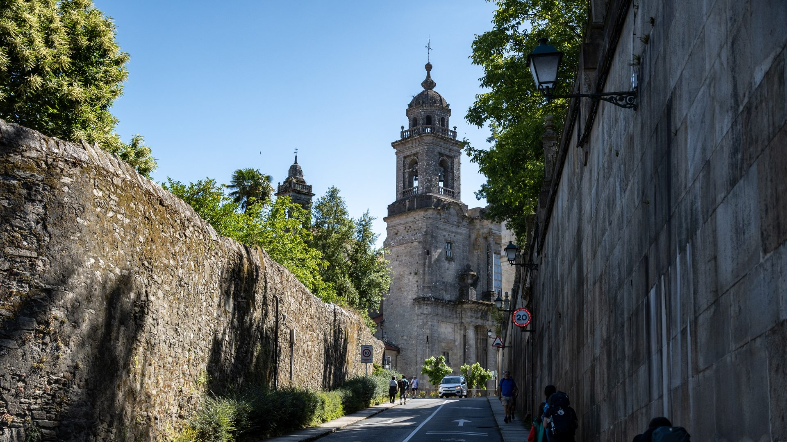
好不容易走到終點，連休息都來不及，第一件事就是直奔朝聖者辦公室！想要拿到這張意義非凡的證書，現在必須先抽取號碼牌，避免排隊人龍。
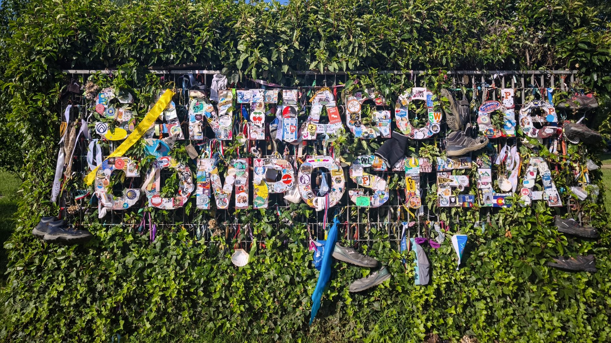
領證書時意外發現隱藏版動線：因為三人同行，我們被一路引導到樓下的團體辦理區；自己一個人來的話，就在等候區領號碼牌等叫號。沒想到領一張朝聖證書還有小攻略！
到了樓下，在電腦前輸入這趟旅程的起點和里程，一個月的跋涉回憶瞬間湧上心頭。這張用拉丁文寫成的 Compostela，在中世紀可是能洗清罪過、真正意義上的「通往天堂 VIP 門票」；對現代的我們，它不只是贖罪券，更是這麼多天沒有放棄的最好證明。
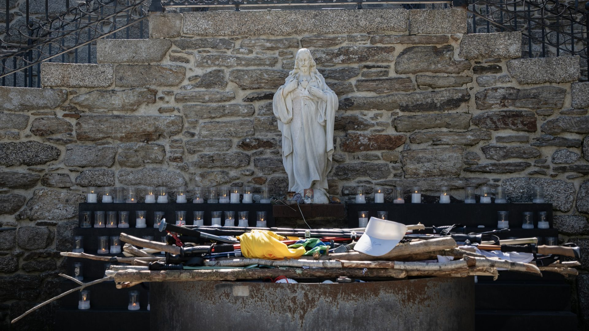
拿到官方證書後再分享隱藏彩蛋：聖方濟各教堂印製了專屬的朝聖證書，免費提供給「走完全程」的朝聖者！走完 800 公里，一定要來解鎖這個榮耀。
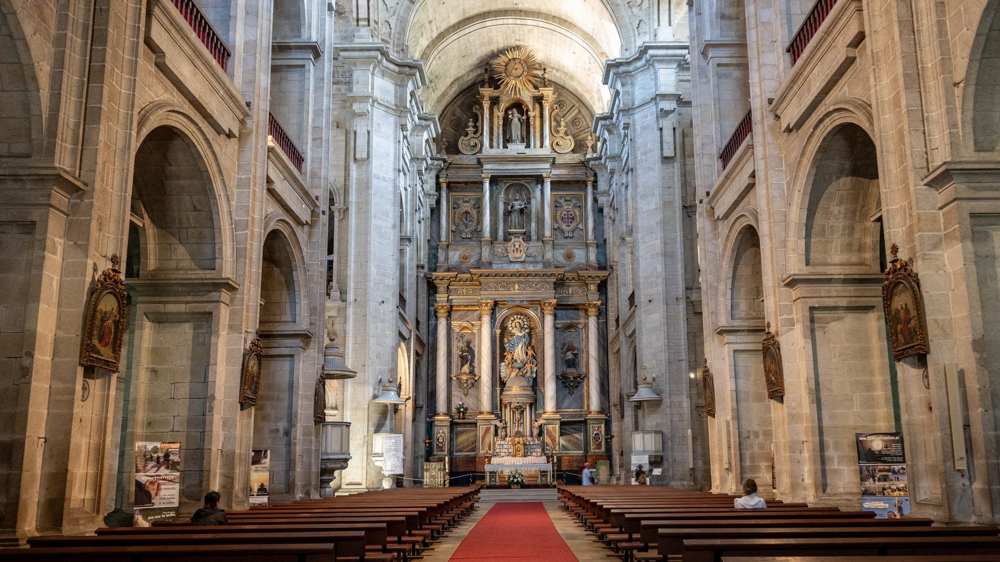
手裡拿著得來不易的證書，我們回到廣場，準備拍下這張等了 800 公里的合照。傳說在一千多年前，天空的奇妙星光指引人們找到使徒聖雅各的陵墓，這裡因此被稱為「繁星之野」。從那之後，國王、騎士、平民甚至罪犯都朝著同一個方向走；中世紀上路死亡率極高，沿途強盜疾病橫行，甚至催生了聖殿騎士團來保護朝聖者——當年能活著走到終點，絕對是奇蹟與庇佑。
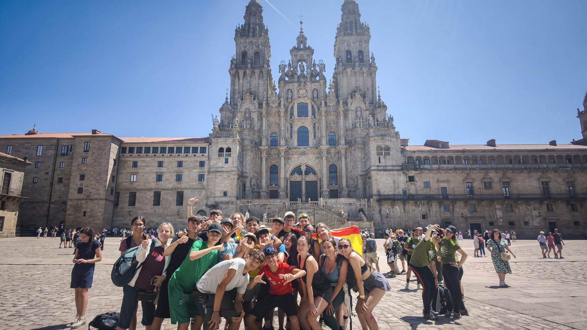
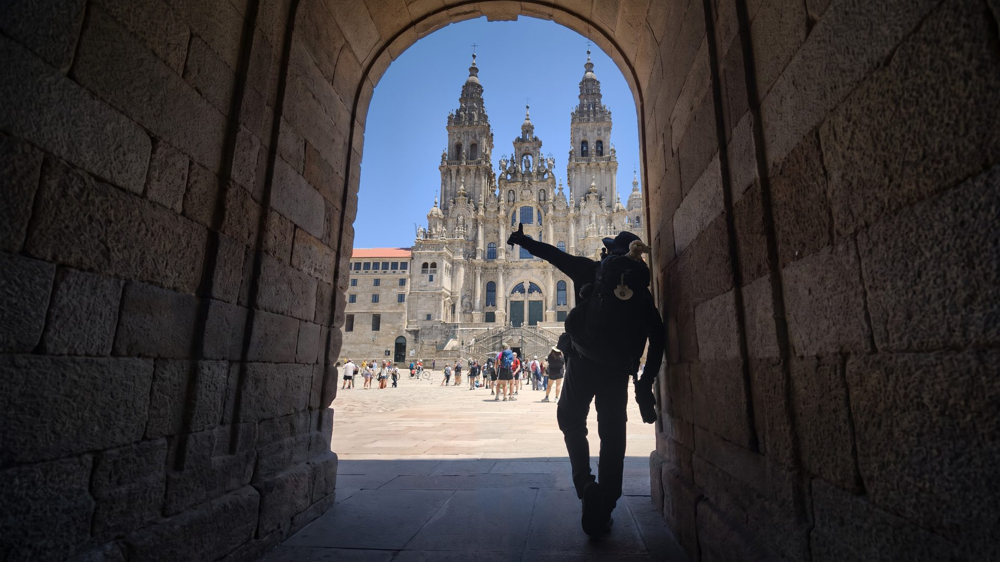
如今路上的強盜沒了，這裡變成一條找回自己的路。沿路遇見太多生命的勇士：正在戒毒的年輕人、對抗憂鬱症的旅人，決心離開舒適圈，用最艱難的徒步強迫自己面對內心最深處的恐懼。不同時代、不同理由，最後都走到同一個地方。快門按下的那一刻，這張合照不只是抵達的紀念——它證明面對未知與痛苦時，我們都沒有輕易放棄。
抵達聖地牙哥，除了領證書，絕不能錯過大教堂的「朝聖者彌撒」！神父會一一念出 24 小時內抵達的朝聖者國籍和出發地，那一刻真的非常感動。而全場最期待的，是傳說中的「盪香爐儀式」：巨型香爐在中世紀是為幫幾個月沒洗澡的朝聖者除臭、驅除傳染病而設，現在平時要團體自費贊助才看得到——幸運之神眷顧，我們這場竟然碰上了！親眼見證 80 公斤的純銀香爐在空中震撼擺盪，絕對是整趟最幸運的祝福。
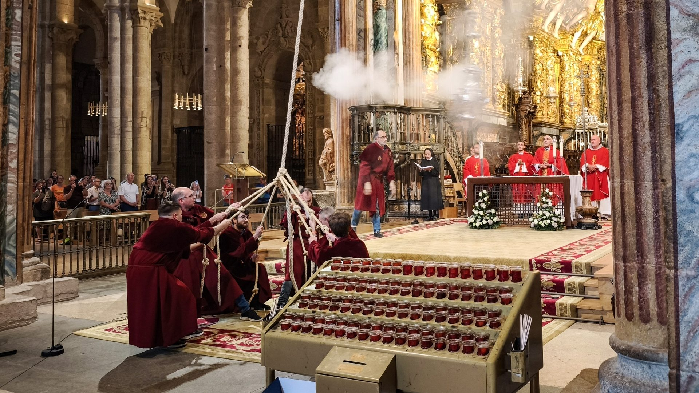
參加的是晚上七點半的彌撒，走出大門已接近九點，金黃色的夕陽把整座大教堂照得金燦燦的——此刻陽光給了我們溫暖擁抱。
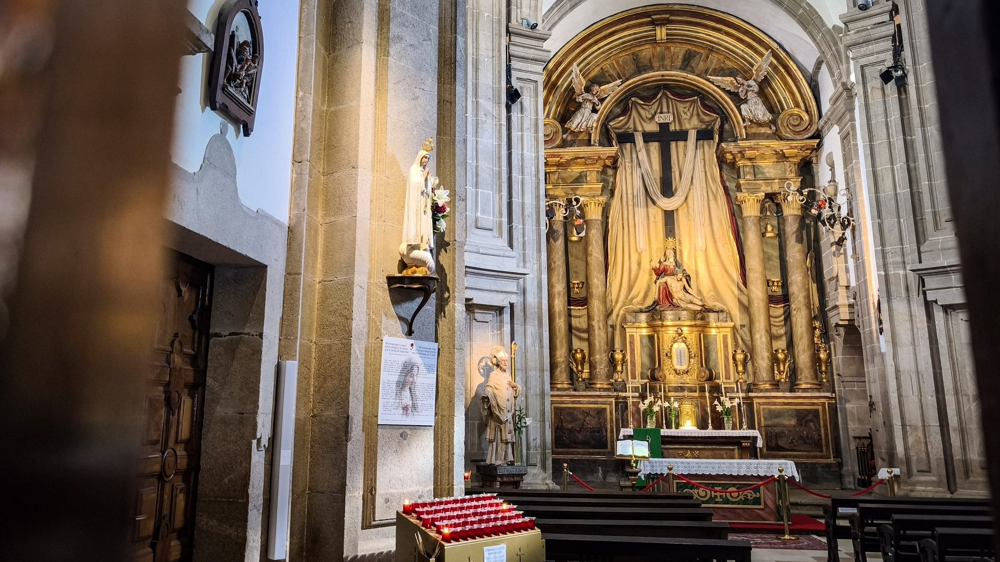
一整天滿滿的感動，決定用一頓熱騰騰的韓式料理犒賞自己：白飯配濃郁醬汁的炸雞，就是抵達終點最棒的慶功宴！
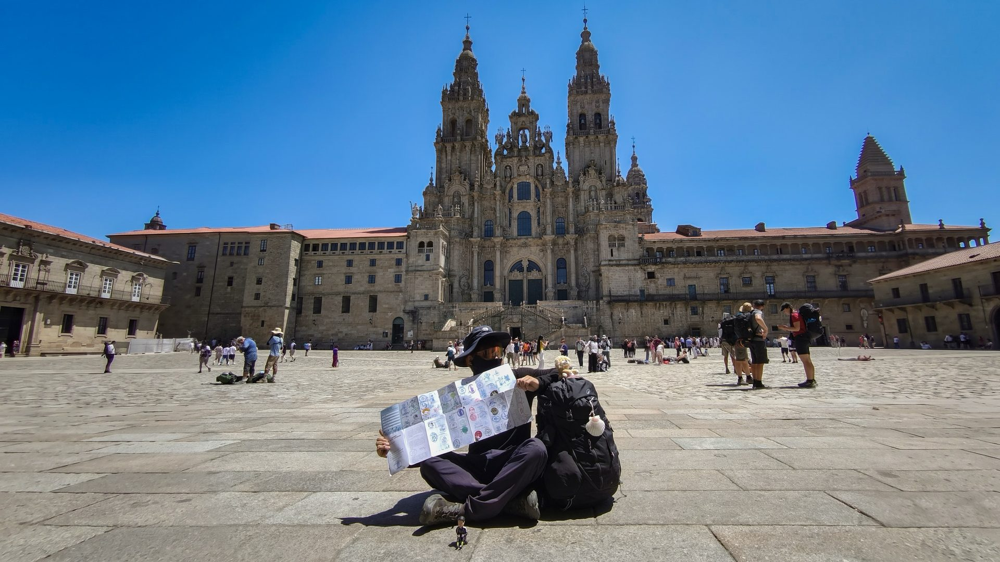
29 天，800 多公里。出發前忐忑徬徨，不確定自己能不能走完——畢竟平常沒有爬山或跑步的習慣。但敞開心胸接受路上的一切，找到屬於自己的「舒適節奏」最重要：不要受傷，慢慢走，總會走完。走著走著，沿途的答案變成了水泡、熱浪、迷路與紅酒，還有一路上意想不到的朋友；最觸動人心的，是晚禱撫慰人心的吉他彈唱、70 歲依然熱血的大姊，還有在庇護所和陌生人像家人一樣煮飯跳舞。當大教堂出現在眼前，我知道自己走到了——有些許興奮、感動，甚至幸運看見了盪香爐。但總感覺少了些什麼？或許是因為我知道：明天的我，將繼續徒步前往世界盡頭。旅程，還沒有結束。
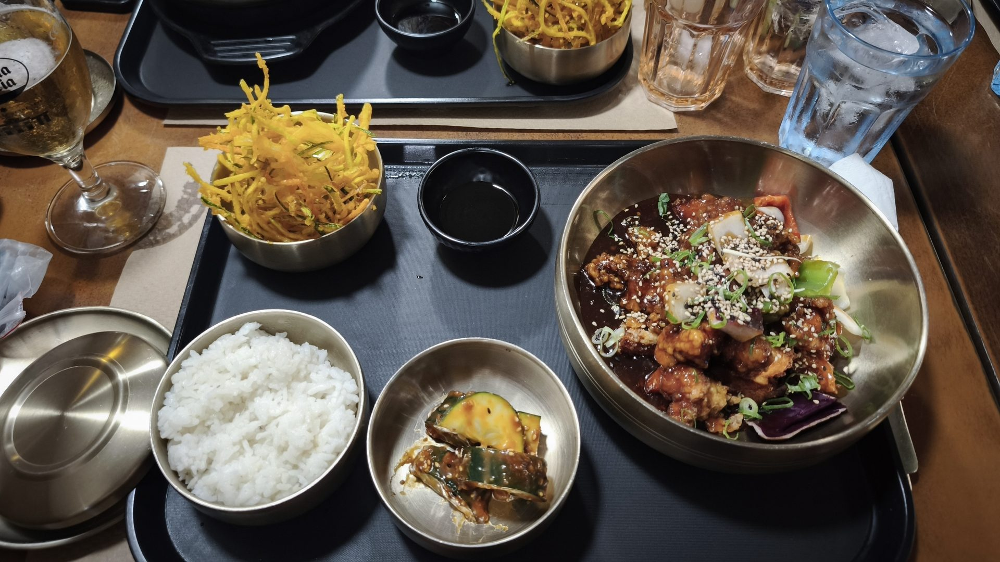
📚 朝聖者小百科：Santiago de Compostela
聖地牙哥-德孔波斯特拉（Santiago de Compostela）是整條朝聖之路的終點。傳說使徒聖雅各的陵墓在此被發現，「Compostela」即源自拉丁文「繁星之野」（Campus Stellae）。老城區是世界文化遺產，大教堂前方的 Obradoiro 廣場是每個朝聖者 800 公里的句點。
朝聖者辦公室（Oficina del Peregrino）憑集滿印章的護照領取 Compostela；三人以上團體有樓下專屬動線。聖方濟各教堂另有免費的全程證書可領。晚上七點半的朝聖者彌撒最熱門，能否遇到盪香爐（Botafumeiro）全憑運氣。
📜 Compostela 要先抽號碼牌，團體走樓下動線更快
⛪ 聖方濟各教堂的免費全程證書，隱藏版必解
🥾 20km · 29 天 800 公里，旅程還沒結束
| 早餐：拿鐵＋烘蛋 | €5.0 |
| Bar | €2.5 |
| 超商 | €11.0 |
| 水果店 | €2.0 |
| 住宿 | €10.0 |
| 合計 | €30.5 |
🎬 對應 Vlog EP7｜最後 100 公里：Samos → Santiago 五天全紀錄